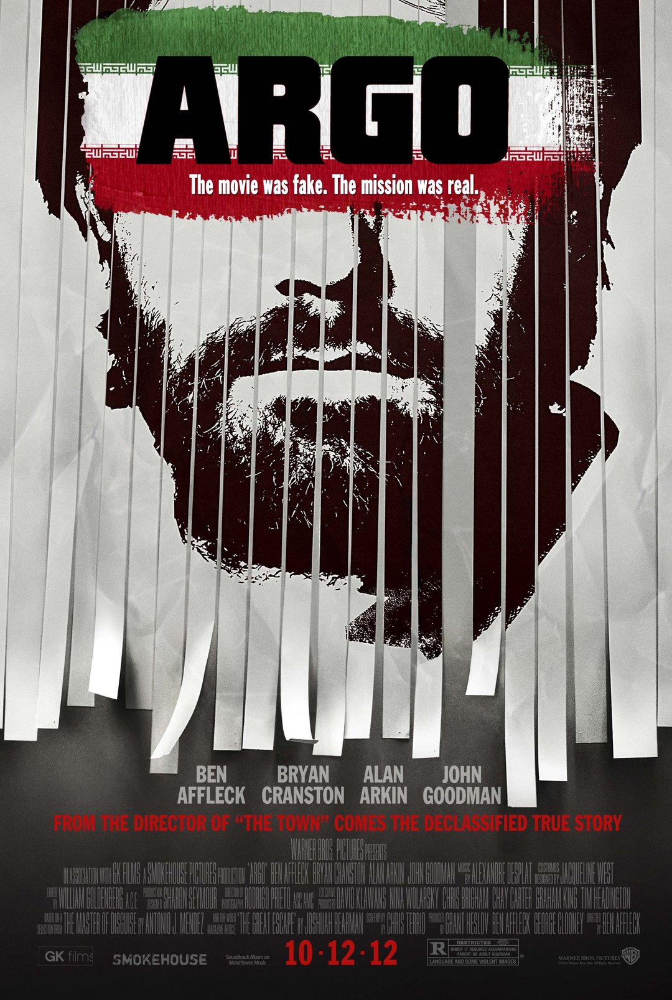
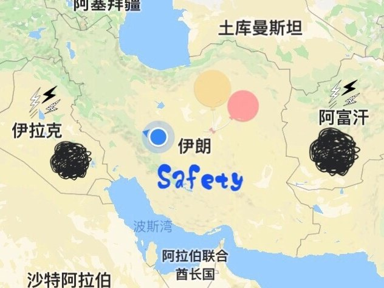
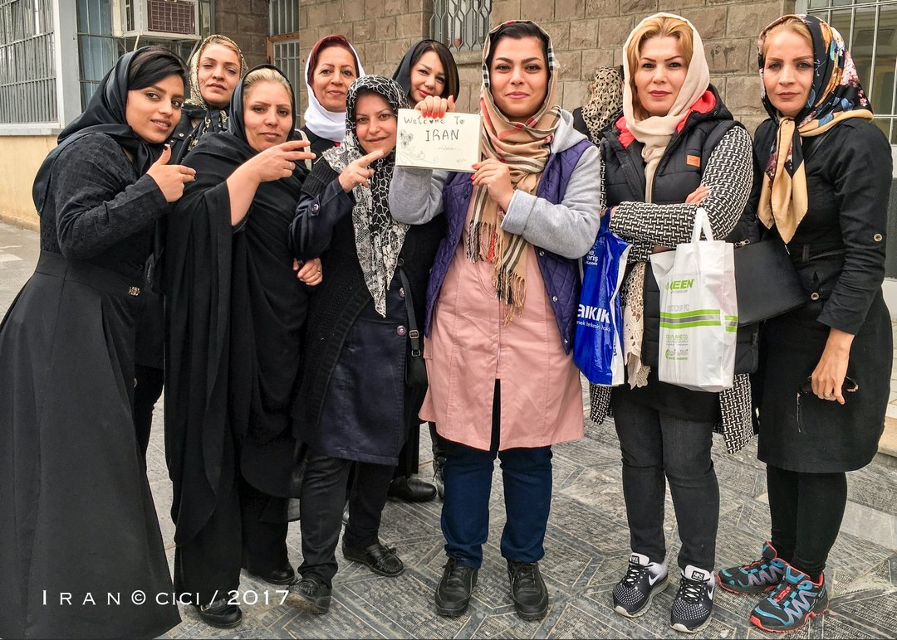
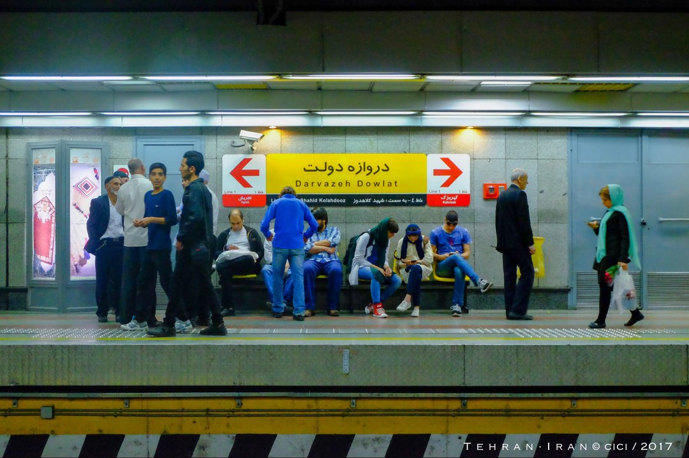
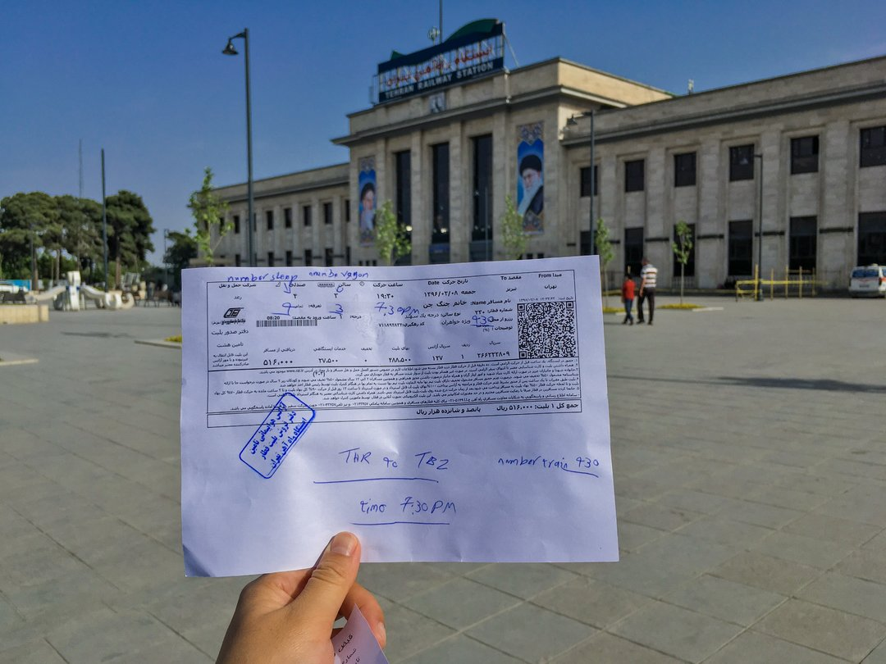
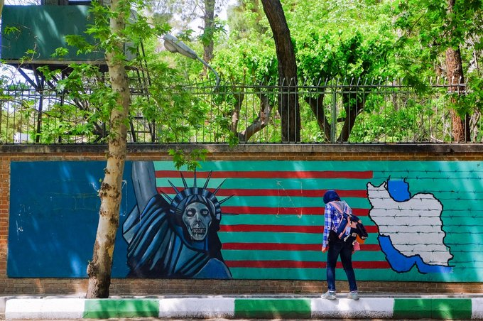
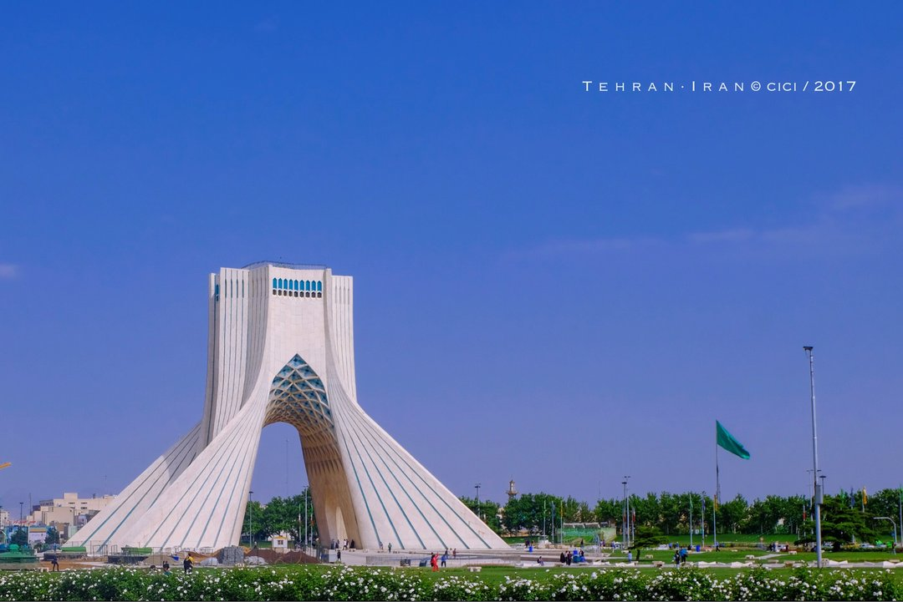
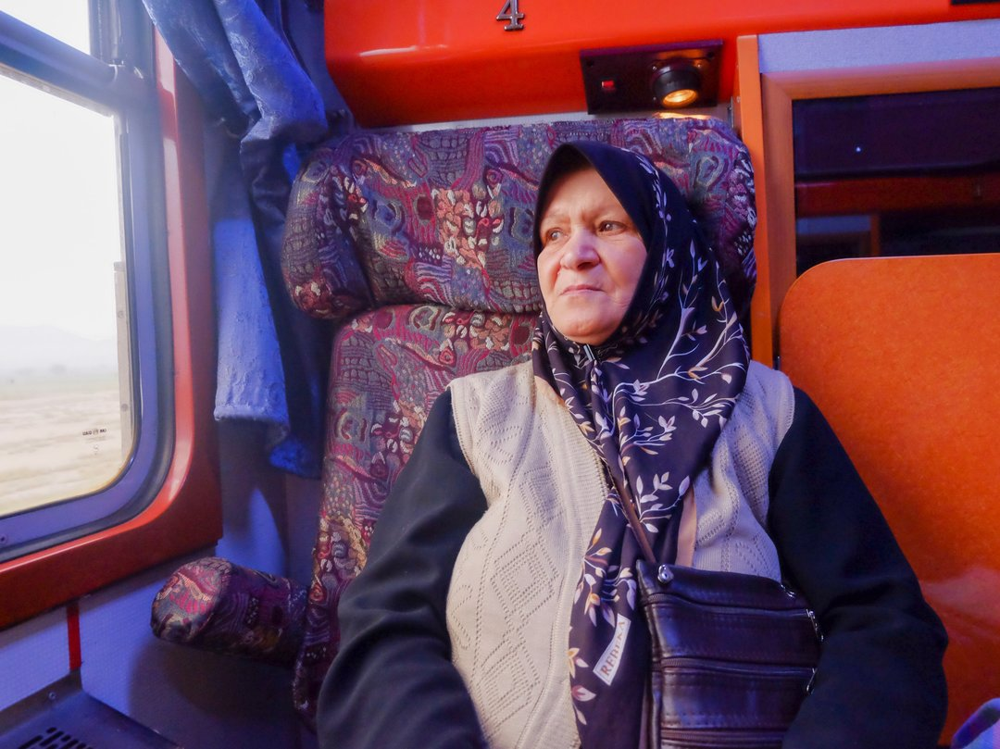

引言
战火中东，印象伊朗那里很危险，这个城市到处都是眼线，时时刻刻注视着你，搜寻着你；在任何时候，你都有可能会被发现。肮脏的街头，暴乱的人群，穷凶极恶，黑眼睛深眼眶的中东男子；纳菲西书中那个飞弹横流的傍晚，那个侦察兵闯入家中逮捕犯人的午后。对于一个尚未走进的人，都可能是个致命的打击。 ——《逃离德黑兰》
这是经典电影《Argo》里面的对伊朗的描述，电影的背景是1979年11月14日的伊朗人质危机事件，美国人站在他们的角度，由事件改编而拍摄了这部电影。完全扭曲了伊朗的形象，以美国为首的西方阵营，称伊朗为“邪恶轴心国”，用强大的世界影响力，让大部分人误会了伊朗。
伊朗就像印度一样，如果你没有亲身来过，你永远不了解什么是真相。
打开中东的地图，你会发现伊朗的左边是伊拉克和叙利亚，右边则是阿富汗，这里是一个常年战火纷飞的地带。还有不远前的“两伊战争”，第一印象会自然而然的认为伊朗也是个战乱国家，身穿黑色斗篷的女性，拿着AK47和M16的武装士兵，随时可能发生自杀式爆炸袭击的街头，坍塌的房屋…
实际上，事实恰恰相反，这里没有战乱、没有ISIS、也没有塔利班。伊朗本身有着丰富的石油资源，以强大的军事实力控制边境，保护着这个国家。虽作为同样的穆斯林国家，而伊朗的宗教单一性，伊朗也是中东上最安全的国家。
好客的伊朗人，灿烂的波斯文化和历史，好看的波斯小孩，也是吸引着我前往的理由。如果，不出发，世界就只有你看到的这么大，也只是一个道听途说的世界。
夜航·波斯帝国
选择从吉隆坡到德黑兰的绕路飞行，其实能节约不少费用，但却要耗费很多的时间，所以不做参考推荐。夜航，八个多小时的红眼飞行，总算抵达目的地——德黑兰。
伊朗纪年1438（2017年），我终于来到了波斯这片向往已久的土地。
此时此刻，是伊朗的半夜时分，4月的伊朗已经开始实行夏令时计时了，与国内时差晚3个小时30分钟。一句“Salam ”，因为在国内提前就办好了伊朗的贴纸签证，所以很快就入境了。机场里有wifi，但是信号很差，登录微信，定个位发朋友圈报平安也要等很久，还需要VPN。
在机场1楼找到Irancell的电话卡售卖点，但是买到卡却要等到早上7点才能激活，就在不远处电梯上到2楼，就有Money Exchange的兑换点。
换好钱，买好电话卡，就坐在灯火通明的大厅里等候天亮，等待电话卡激活，也等天亮了再决定下一步，又是一夜睡在机场。途中断断续续有出租车司机来询问，要不要坐车？在飞机上遇见的国人，就在伊朗结伴了。
一致决定包车到了德黑兰的车站，再坐大巴直接南下伊斯法罕。初来乍到，被豪华的伊朗城际大巴所惊艳到——除了豪华，再也想不到其他的词汇形容。飞机商务舱式的座椅，一排只有3个座位，非常宽敞，有盒装的点心零食和果汁，还有热红茶供应。伊朗的油费很便宜，约2元人民币一升，一辆汽车汽油加满，也才2美金。
德黑兰的地铁线路有些头晕，不报站，也大多是波斯语，看也看不懂，还好有好客的伊朗人，站台的工作人员还亲自打印了彩色的地铁线路图。有单独的女士车厢，走进去会有一股香水味扑鼻而来，乘坐时候，会发现一个很亲切的地方，就是地铁的车厢上有中文哦，是made in China，真的非常亲切啊！
 但是的德黑兰的出租车就不敢恭维了，满天乱喊价。所以，记得砍价哦~
从车站出来再到火车站，买好晚上7点那趟前往边境城市大不里士的火车票，很便利，火车站有寄存行李的地方，大致15块人民币左右寄存一整天。紧接着，就开启了德黑兰的一日大暴走。
Part1：美国驻德黑兰大使馆
还记得1979年，那一场震惊世界的美国人质危机么？伊美两国断交，美称“伊朗是邪恶的轴心”，电影《逃离德黑兰（Argo）》就是根据这个事情改编的。而伊朗本国，也称“美国是最大的撒旦”。特地去了事件爆发的地点——Den of Espionage ，原美国驻德黑兰大使馆，各种反美的标语，最经典的，莫过于画成骷髅的自由女神。
Part2：德黑兰的地标性建筑——自由塔 Azadi Tower
自由塔，建于1971年，选用2500块产自伊斯法罕的大理石，象征波斯帝国建国2500年（1971年）。
圆满打卡完毕德黑兰，跟伊朗之行的最后一个同伴道别，一个人前往大不里士。被独自伊朗旅行的日本小哥误认成了日本人，还用蹩脚的日语聊了会儿。
伊朗的火车很干净，也超豪华。一个车厢4个人，有单独的门，男士女士也是有别的。原本我是下铺的位置，但是遇到同排的奶奶年纪太大，睡上铺太麻烦，就同她换了位置。虽然语言也不通，奶奶不时摸摸我的头，车厢里的另外2个姐姐，只有1个还会一点点英语，说：“奶奶很喜欢你，我们也喜欢！”一直塞糖果，还有糕点给我，甚至帮我铺好床（笑~）。
中途太阳完全落山时候，宣礼词响起，是祷告时间。火车也不例外，停靠在加兹温的清真寺，信徒们纷纷前往祷告。姐姐也悄悄带我去，我连忙推迟，因为我并不是穆斯林，她说没关系，你可以看看的。
奇妙的火车体验，就寝时间，也看到她们脱下了头纱和长袍，并跟我们无差别，也不是所有的穆斯林都像恐怖分子那样让人颤栗。其实黑袍下面，也有一个颗颗平常可爱的内心。